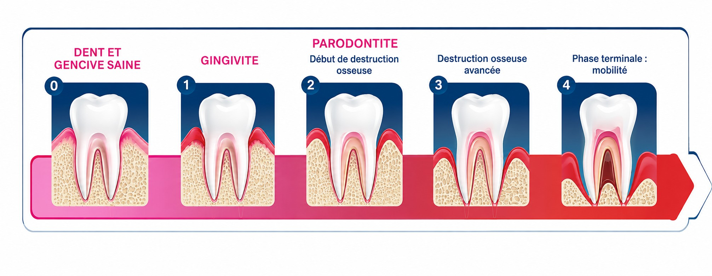

La maladie parodontale
Les maladies parodontales sont des atteintes des tissus de soutien de la dent (gencive, ligament alvéolo-dentaire, os environnant), d’origine bactérienne. Le Dr Victoire Leclercq assure le suivi et le traitement parodontal au cabinet.
Une maladie infectieuse, lente et silencieuse
La maladie parodontale est provoquée par des bactéries qui s’installent dans la plaque dentaire, puis atteignent et détruisent progressivement les tissus qui soutiennent la dent (gencive et os). Son évolution est lente, souvent étalée sur plusieurs dizaines d’années, et peut toucher une, plusieurs ou toutes les dents.
Elle s’installe le plus souvent à partir de la trentaine, avec une progression d’abord discrète. Une hygiène bucco-dentaire minutieuse et suivie permet de la stabiliser, mais elle ne se guérit pas : un relâchement de l’hygiène peut suffire à provoquer une reprise de la maladie.

Les stades de la parodontite, de la dent saine à la phase terminale
Le premier stade est la gingivite, qui se manifeste par des saignements de gencive. Traitée, cette inflammation est réversible et sans séquelles. Livrée à elle-même, elle évolue vers un déchaussement des dents appelé « parodontite », avec une perte irréversible des tissus autour des dents, pouvant à terme provoquer leur perte.
La plaque dentaire, moteur de la maladie
Une fine pellicule d’origine salivaire se dépose en permanence sur les dents et les gencives. Colonisée par des bactéries qui adhèrent entre elles grâce à une substance collante issue des aliments, elle devient la plaque dentaire. Certaines de ces bactéries favorisent les maladies des gencives, d’autres les caries.
Gestes de prévention- Brossage des dents et des gencives matin et soir, pour désorganiser la plaque avant qu’elle ne devienne nocive
- Utilisation quotidienne du fil dentaire ou de brossettes inter-dentaires, pour les zones inaccessibles à la brosse
- Détartrages et polissages réguliers chez votre chirurgien-dentiste
- Mastication, mouvements de la langue et de la parole, qui limitent naturellement l’accumulation de plaque
Les symptômes qui doivent amener à consulter
- Saignement des gencives au brossage ou pendant les repas
- Gencives qui semblent se rétracter, laissant apparaître des dents plus longues
- Dents qui bougent, se déplacent ou laissent apparaître de nouveaux espaces entre elles
- Perte spontanée d’une ou plusieurs dents
L’absence de saignement ne signifie pas pour autant l’absence de maladie parodontale : elle peut progresser silencieusement. La présence d’un seul de ces signes justifie un bilan parodontal complet.
Ce qui favorise l’évolution de la maladie
- Le tabac, qui aggrave la maladie et perturbe la cicatrisation lors des traitements
- Le stress
- Les dérèglements hormonaux
- Le diabète
- Certains facteurs héréditaires
Un lien étroit avec la santé générale
Les maladies parodontales entretiennent des liens étroits avec plusieurs pathologies générales. Chez les personnes diabétiques, elles compliquent l’équilibre glycémique, tandis qu’une glycémie mal contrôlée aggrave en retour la maladie parodontale. Une maladie parodontale non traitée est également associée à un risque cardio-vasculaire plus élevé.
Chez la femme enceinte, les changements hormonaux du début de grossesse augmentent le risque de maladie parodontale et peuvent aggraver une atteinte préexistante ; une consultation en début de grossesse est recommandée, la maladie parodontale étant par ailleurs associée à un risque accru de naissance prématurée.
Source : UFSBD, Union Française pour la Santé Bucco-Dentaire
Un doute sur la santé de vos gencives ?
Le Dr Victoire Leclercq assure les consultations et le suivi parodontal au cabinet.